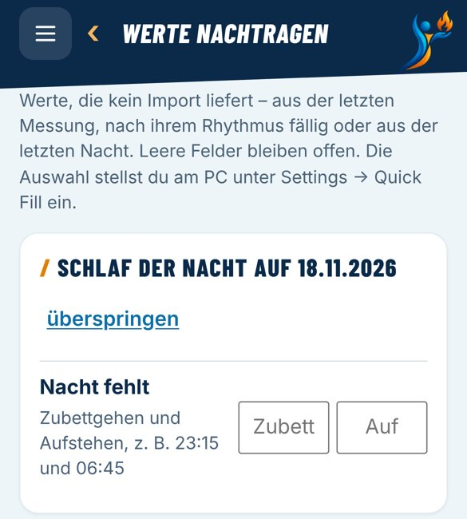
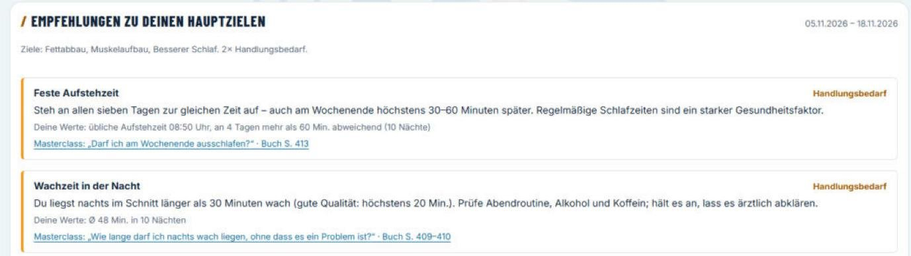

Neuigkeiten
Was in den letzten Versionen dazugekommen ist. Updates installierst du mit LIFESPAN-OS-Setup.exe – deine Daten bleiben erhalten. Neue Maschinen und den aktuellen Lebensmittel-Katalog bekommst du mit dem Komplettpaket (ZIP neu laden, Einrichten.cmd starten).
Version 1.0.158 (Handy-App 1.58.0) – Open Food Facts, Strichcode im Lebensmittel-FormularNeu
19.11.2026
Enthält auch die Neuerungen aus 1.0.156 und 1.0.157:
- Open Food Facts: rund 240.000 Markenprodukte aus Deutschland und Österreich, lokal auf dem PC – keine Verbindung ins Internet. Übernommen werden nur geprüfte Produkte (Pflichtwerte vorhanden, kcal höchstens 15 % neben der Rechnung aus den Makros).
- Nutrition → Open Food Facts: suchen nach Name, Marke oder Strichcode, „Übernehmen …“ öffnet das Formular – alles lässt sich vor dem Speichern bearbeiten.
- „Lebensmittel hinzufügen“ durchsucht jetzt eigene Lebensmittel, BLS 4.0 und Open Food Facts zusammen.
- Der Katalog ist im Download-Paket enthalten; „Einrichten.cmd“ kopiert ihn mit.
- Nutrition → Lebensmitteldatenbank → Neues Lebensmittel: Feld für den Strichcode und Nährwerte vom Foto der Packung erkennen (wie am Handy); bekannte Strichcodes werden in Open Food Facts nachgesehen.
- Mahlzeit erfassen: „Lebensmittel hinzufügen“ steht über dem Freitext; die Mengen-Knöpfe (50/100/150/200, ±10) sind wieder entfernt.
- Maschinenbilder: Dateien mit falscher Endung in echte JPG/PNG umgewandelt.
- Handy-App 1.58.0: Open Food Facts als optionaler Download (Import/Export → Open Food Facts), Treffer bei der Suche und beim Strichcode-Scan; Suche steht über dem Freitext.
Daten: Open Food Facts (world.openfoodfacts.org), Open Database License (ODbL).
Version 1.0.155 (Handy-App 1.56.0)
19.11.2026
- Abgleich auch während die App läuft: Polar höchstens einmal je Stunde, neue Handy-Datei alle 2 Stunden bzw. 30 Minuten nach einer Änderung, Rückgabedateien vom Handy alle 10 Minuten.
- Settings → Polar: Schalter „Automatisch synchronisieren“ (beim Start und im laufenden Betrieb).
- Handy: Griffkraft im Quick Fill (links und rechts, Rhythmus aus Settings → Quick Fill).
- Handy: „Importieren“ direkt in der Overview – ein Tipp öffnet die Dateiauswahl; ältere Dateien werden erkannt.
Version 1.0.154 – Mahlzeiten schneller eintragen
18.11.2026
- Tagebuch: „Wie gestern“ und „Wie letzten <Wochentag>“ sowie oft gegessene Zusammenstellungen mit einem Klick eintragen – danach „Rückgängig“.
- Geplante Gerichte aus Nutrition → Planen mit „Gegessen“ ins Tagebuch übernehmen.
- Mahlzeit erfassen: Freitext („200 g Hähnchen, 150 g Reis, 1 EL Olivenöl“), Favoriten mit üblicher Menge und Mengen-Knöpfe (50/100/150/200 g, ±10, ½/1/2 Portionen).
- Handy-App 1.55.0: dieselben Funktionen, Mehrfachauswahl in der Suche und Fasttracking direkt am Handy.
Version 1.0.153 – Griffkraft im Quick Fill
18.11.2026
- Quick Fill fragt auf Wunsch die Griffkraft ab (links und rechts, nach Rhythmus: täglich bis monatlich). Einstellen unter Settings → Quick Fill.
- Import/Export: kürzere Einleitung, mehr Platz für die Inhalte.
Version 1.0.152
18.11.2026
- Handy-App 1.54.0: Quick Fill zum Nachtragen fehlender Werte und des Schlafs, Empfehlungen zu deinen Hauptzielen, Ziele, Datenqualität mit „Erledigt“, Health → Termine und Nutrition → Planen.
- Training: „HYROX-Wettkampf-Angaben“ erscheinen nur noch bei HYROX-Einheiten.
- Insights → mögliche Zusammenhänge: Eiweiß und Muskelkater am Folgetag entfällt; Empfehlungen ohne Aufzählungspunkte.

Version 1.0.151
18.11.2026
- Quick Fill mit Schlaf: fehlt die letzte Nacht, fragt die App Zubettgehen und Aufstehen ab, sonst leere Angaben wie die Schlafqualität.
- Insights → Datenqualität: Hinweise lassen sich als erledigt bestätigen und verschwinden danach.
- Settings und Import/Export: Die Sprungleiste zeigt beim Scrollen, wo du gerade bist.
- Handy-App 1.53.0: kleinerer Kopf in der Overview mit Schritten zum Schrittziel.

Version 1.0.150
18.11.2026
- Austausch-Ordner wird wiedergefunden, wenn Google Drive für Windows „Meine Ablage“ an einen anderen Ort verlegt – mit „Diesen Ordner verwenden“.
Version 1.0.149
18.11.2026
- Quick Fill: Werte, die kein Import liefert (z. B. intrazelluläres Wasser), sammelt die App – „Werte nachtragen“ oben fragt sie gesammelt ab.
- Hauptziele in Settings, z. B. Fettabbau, Muskelaufbau oder besserer Schlaf.
- Insights → Empfehlungen zu deinen Hauptzielen: aus „iCoach.Me – Die Masterclass“ zu deinen Werten der letzten 14 Tage, jeweils mit Buchstelle – nur mit deiner Einwilligung.

Version 1.0.148
18.11.2026
- Oberfläche aufgeräumt: schmaler Kopfbereich beim Scrollen, breitere Ansicht auf großen Bildschirmen, ruhigere Diagramme.
- Training → Auswertung übersichtlicher; Sprungleiste in Settings und Import/Export.
- Handy-App 1.52.0: Tabellen repariert, Overview-Karten zuklappbar, Schrift ohne Google Fonts.
Version 1.0.147
18.11.2026
- Nutrition → Planen: Wochenplan aus deinen Vorlagen und Rezepten mit Nährwerten je Tag und Einkaufsliste mit Mengen (in die Zwischenablage oder als To-dos).
- Insights → Monats- und Jahresrückblick: Kennzahlen mit Vergleich zum Vormonat bzw. Vorjahr, Aufteilung nach Wochen bzw. Monaten und neue Rekorde – als PDF.
- Geräte-Import: Oura und WHOOP über deren Exportdateien (Schlaf mit Phasen, HRV, Ruhepuls, bei Oura auch Schritte).
Version 1.0.146
18.11.2026
- Training → Fortschritt: „Neue Rekorde“ erkennt jede verbesserte Bestleistung und das geschätzte 1RM (Epley); Bestenliste mit 1RM und Sortierung.
- Insights → Ziele: z. B. Kniebeuge 140 kg oder Körperfett unter 15 % – mit Fortschrittsbalken, Meilensteinen, Verlauf und nötigem Tempo bis zum Zieldatum.
- Health → Termine: Blutabnahme, Arzt- und Labortermine mit Erinnerung – in der Terminübersicht, der Kalender-Datei, im Weekly Report und als Hinweis in der Overview.
- Globale Suche: Strg+K oder „Suchen“ in der Kopfleiste – Übungen, Lebensmittel, Laborwerte, Einheiten, Notizen, Ziele, Termine und Tage.
Version 1.0.145
17.11.2026
- Insights → Datenqualität: findet Lücken, Ausreißer (z. B. 8 kg Gewichtssprung an einem Tag) und Doppelte über alle Bereiche, mit „Öffnen“ zum Korrigieren.
- Sleep → Schlaf-Regelmäßigkeit: Streuung von Zubett-, Aufstehzeit und Schlafmitte, Verschiebung zur Vornacht und Wochenende gegenüber Werktagen.
- Sleep → „Koffein vor dem Schlafen“: hellbraune Fläche unter der Kurve.
Version 1.0.144
17.11.2026
- Schritte über den Tag von Polar werden wieder übernommen (Uhrzeiten ohne Sekunden).
Version 1.0.143
17.11.2026
- Import/Export → Freigabe-Paket für Trainer oder Ärztin: Tabellen, optional Arztbericht-PDF – weitergeben machst du selbst.
Version 1.0.142
17.11.2026
- Training → NEAT → Schritte über 24 Stunden.
- Kalender-Datei (.ics) für die nächsten 8 Wochen.
- Kurzanleitung fürs iPhone beim Austausch-Ordner.
Version 1.0.141
17.11.2026
- Austausch & Abgleich über einen Ordner in Google Drive; Import-Ordner für Uhr, Ring, Waage und Sensor.
- Polar: Synchronisieren beim Start (abschaltbar).
Version 1.0.140
17.11.2026
- Plan der Woche als To-dos, Datenprüfung mit „Öffnen“, Tag im Überblick, Superhuman-Zeitachse.
Version 1.0.139
17.11.2026
- Weekly Reports: jeden Montag der Wochenbericht der abgeschlossenen Woche – lesen oder als PDF.
Version 1.0.138
17.11.2026
- Schritte: der zuletzt erfasste Wert gilt; Handy-Settings bearbeitbar.
Version 1.0.137
17.11.2026
- Polar-Datenexport (ZIP) vollständig einlesen.
Version 1.0.136
16.11.2026
- Eigene Mahlzeiten, Seiten anpassen in Sleep, Recovery und Import/Export, Koffeinspiegel in der Nacht.
Version 1.0.135
16.11.2026
- Hersteller-Pakete zum Herunterladen statt fest eingebauter Herstellerprodukte.
Version 1.0.134
16.11.2026
- 113 neue Übungen, HYROX-Simulation und -Wettkampf.
Alle Daten bleiben auf deinem Computer. Ältere Versionen findest du auf GitHub unter „Releases“.